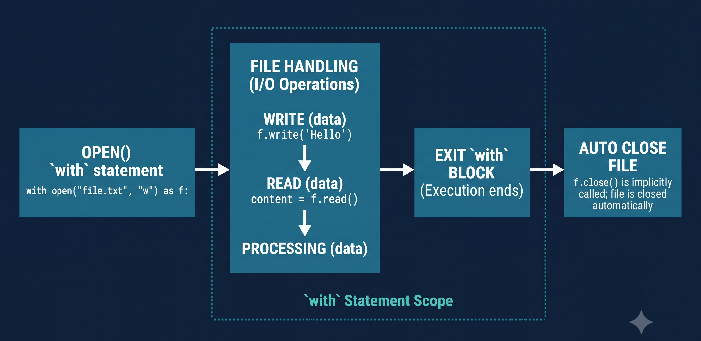

Ficheiros de texto · Logs · CSV
UC00606 · Linguagem Estruturada · Aula 8
Tudo o que está numa variável morre quando o programa fecha
# O Simulador tem uma lista de agentes
agentes = ["Ana", "Bruno", "Carla"]
# O utilizador adiciona um novo agente...
agentes.append("Diana")
# ... e fecha o PyCharm.
# Amanhã, ao abrir de novo:
agentes = ["Ana", "Bruno", "Carla"]
# ↑ Diana desapareceu!Três modos essenciais — escolhe o certo para cada situação
| Modo | Significado | Ficheiro existe? | Apaga conteúdo? |
|---|---|---|---|
'r' | Ler (read) | Tem de existir | Não |
'w' | Escrever (write) | Cria se não existir | ✅ Sim |
'a' | Acrescentar (append) | Cria se não existir | Não |
'w' apaga todo o conteúdo anterior sem aviso — usa com cuidado.
Garante que o ficheiro fecha sempre, mesmo se houver erro
f = open('dados.txt', 'r')
conteudo = f.read()
# Se houver erro aqui...
f.close() # nunca chega aqui!with open('dados.txt', 'r') as f:
conteudo = f.read()
# fecha automaticamente —
# mesmo se houver errowith é um gestor de contexto — abre e fecha automaticamenteopen(), usa-o dentro de withEscolhe conforme o que precisas
with open('agentes.txt', 'r', encoding='utf-8') as f:
# Tudo de uma vez (string)
tudo = f.read()
# Linha a linha (lista de strings)
linhas = f.readlines()
# Percorrer linha por linha (eficiente para ficheiros grandes)
for linha in f:
print(linha.strip()) # .strip() remove o '\n' do fimwrite() para um valor, writelines() para uma lista
agentes = ["Ana\n", "Bruno\n", "Carla\n"]
with open('agentes.txt', 'w', encoding='utf-8') as f:
f.writelines(agentes)
# ou: f.write("Ana\nBruno\n")from datetime import datetime
evento = f"{datetime.now()} login OK\n"
with open('log.txt', 'a', encoding='utf-8') as f:
f.write(evento)
# cada chamada acrescenta uma linha💡 Inclui sempre encoding='utf-8' para acentos funcionarem.
Abrir → operar → fechar (o with faz isso por ti)

✅ Mesmo com erro no meio, o ficheiro fecha sempre — é garantido.
A forma mais simples de guardar dados em tabela
nome,nivel,ativo
Ana,ANALISTA,True
Bruno,CADETE,True
Carla,RECRUTA,False| nome | nivel | ativo |
|---|---|---|
| Ana | ANALISTA | True |
| Bruno | CADETE | True |
| Carla | RECRUTA | False |
O módulo csv trata das vírgulas e das aspas por ti
import csv
with open('agentes.csv', 'r', encoding='utf-8') as f:
leitor = csv.reader(f)
next(leitor) # saltar cabeçalho
for linha in leitor:
print(linha)
# ['Ana', 'ANALISTA', 'True']import csv
agentes = [
['nome', 'nivel', 'ativo'],
['Ana', 'ANALISTA', 'True'],
['Bruno', 'CADETE', 'True'],
]
with open('agentes.csv', 'w', newline='', encoding='utf-8') as f:
escritor = csv.writer(f)
escritor.writerows(agentes)Aceder às colunas pelo nome — muito mais legível
import csv
with open('agentes.csv', 'r', encoding='utf-8') as f:
leitor = csv.DictReader(f)
for agente in leitor:
print(agente['nome'], agente['nivel'])
# Ana ANALISTA
# Bruno CADETEimport csv
campos = ['nome', 'nivel', 'ativo']
agentes = [
{'nome': 'Ana', 'nivel': 'ANALISTA', 'ativo': True},
]
with open('agentes.csv', 'w', newline='', encoding='utf-8') as f:
escritor = csv.DictWriter(f, fieldnames=campos)
escritor.writeheader()
escritor.writerows(agentes)💡 Prefere DictReader/DictWriter — o código faz sentido sem saberes a posição de cada coluna.
Cada linha é um evento — com hora, tipo e mensagem
2025-11-14 20:31:02 INFO Login bem-sucedido: ana
2025-11-14 20:31:45 ERROR Tentativa de acesso negada: IP 10.0.0.99
2025-11-14 20:32:10 INFO Agente desligado: ana
2025-11-14 20:35:01 ERROR Tentativa de acesso negada: IP 10.0.0.99erros = []
with open('simulador.log', 'r', encoding='utf-8') as f:
for linha in f:
if 'ERROR' in linha:
erros.append(linha.strip())
print(f'{len(erros)} erros encontrados')
for e in erros:
print(e)🔐 Em cibersegurança, analisar logs é o primeiro passo para detetar intrusos.
O Simulador passa a guardar e carregar agentes em CSV
import csv
FICHEIRO_AGENTES = 'agentes.csv'
def carregar_agentes():
agentes = []
try:
with open(FICHEIRO_AGENTES, 'r', encoding='utf-8') as f:
leitor = csv.DictReader(f)
for linha in leitor:
agentes.append(linha)
except FileNotFoundError:
pass # primeira vez — ficheiro ainda não existe
return agentes
def guardar_agentes(agentes):
with open(FICHEIRO_AGENTES, 'w', newline='', encoding='utf-8') as f:
campos = ['nome', 'codename', 'nivel']
escritor = csv.DictWriter(f, fieldnames=campos)
escritor.writeheader()
escritor.writerows(agentes)Pequenos detalhes que evitam problemas grandes
with open()encoding='utf-8'newline='' no CSV'agentes.csv' em vez de 'C:\\Users\\...' — portátil entre máquinas.try/except FileNotFoundErrorhashlib na Aula 9 😉Vamos carregar o Simulador v0.5 e adicionar persistência
carregar_agentes()guardar_agentes()carregar_agentes() no início do main()guardar_agentes() antes de sairagentes.csv aparece na pasta do projeto — podem abri-lo em Excel para confirmar.
O que aprendeste hoje